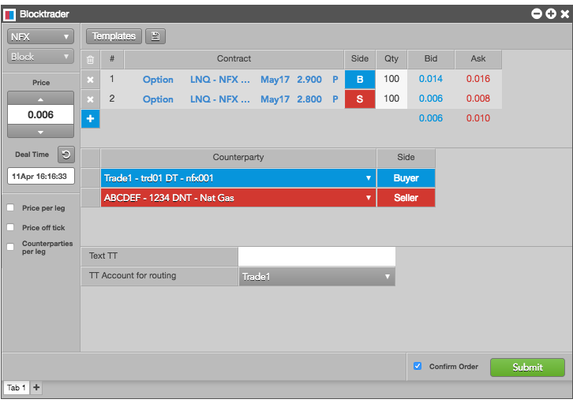

The Blocktrader widget provides you with the ability to submit options and futures block trades and other OTC (over-the-counter) trades to exchanges for reporting and clearing purposes. You can use the widget to submit transactions for multiple accounts and counterparties, and can select a counterparty and account for each side of the trade and submit both sides at once.

Once a trade is executed, you can view order status and fills displayed in the Fills and Audit Trail widgets. Block trades can also be viewed in the Time and Sales widget. Instrument legs defined using Blocktrader can be saved as templates and used for submitting additional trades.
To open the Blocktrader widget, click Widgets in the workspace title bar and select Miscellaneous | Blocktrader.